從新川里漁港旁的路口進入新川里壁畫村, 沿村莊中的道路及小徑一直走, 沿途經過無數色彩繽紛的壁畫, 走了差不多半小時, 終於走出了新川里壁畫村, 來到高速公路, 這時才真真正正的鬆了一口氣!
路口豎立了新川里的石碑和一些壁畫, 這裡才是新川里壁畫村的入口! 如果是從高速公路來, 看見這石碑和旁邊的壁畫, 肯定知道這裡便是新川里壁畫村啦! 強烈建議在海濱那邊也應該豎立同樣的石碑!
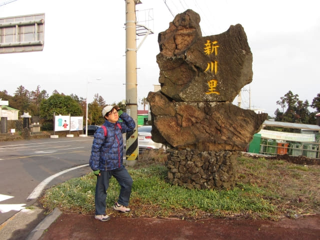
新川里壁畫村入口前的壁畫。
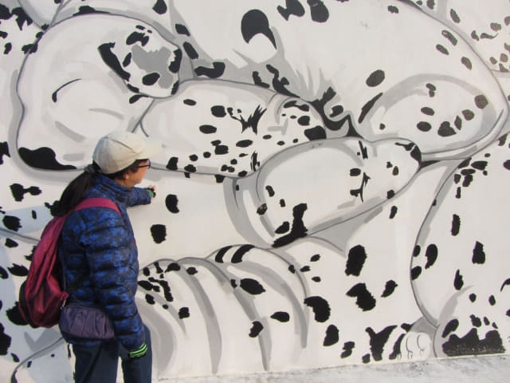
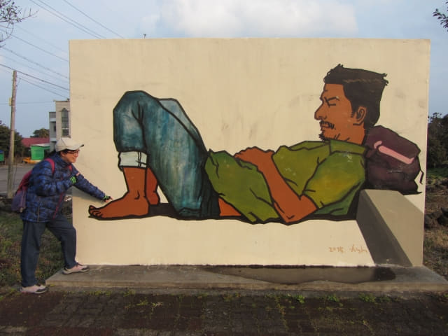
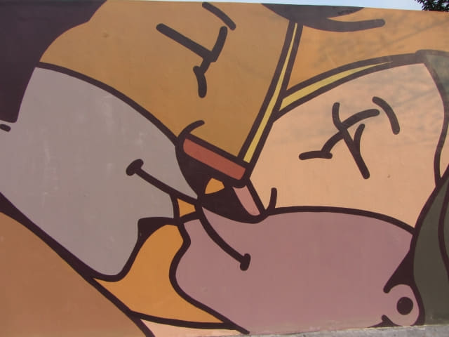
新川里壁畫村 乘巴士返表善市區
戰戰兢兢的遊覽完新川里壁畫村, 接著是打算乘巴士返回表善市區的酒店。很幸運, 往表善市區方向的巴士站就在新川里壁畫村入口的馬路對面。
但是, 馬路的交通非常繁忙, 而且汽車的速度很快, 雖然有斑馬線, 但沒有紅綠燈, 走到馬路對面也是一種考驗!
接著唯有鼓起勇氣、膽大心細的衝過馬路, 真恐怕汽車看不到我們, 或是減速不及, 幸好最後都是有驚無險的走到馬路對面, 但已經一額汗珠!
巴士站就在新川里壁畫村入口的馬路斜對面。
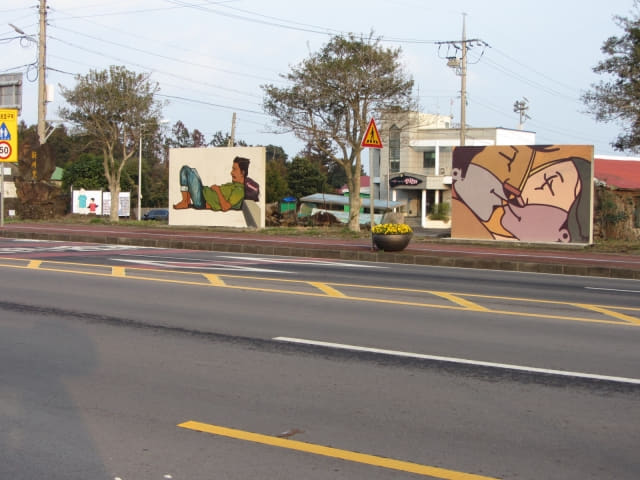
也幸好濟州島的道路和巴士路線十分簡單, 差不多只要方向對便可以到達目的地。等了約十分鐘, 一輛701號巴士駛來靠站。
登上了巴士, 坐下來不久, 看見有一座白色高樓在窗外閃出, 好像有點熟悉的, 便連忙依窗抬頭看清楚, 原來是我們下榻的雷森觀光酒店 (제주리시온호텔 Rezion Tourist Hotel), 便立即按鐘示意下車。
巴士在離酒店不遠的十字路口前的「표선리 제주은행」巴士站停下來。
下了車, 接著當然是在附近找地方吃晚餐。
附近有很多餐館, 但很多都沒有營業, 而橫街小巷內的餐館在晚上又轉為居酒屋。差不多走遍了附近所有食肆, 有幾間不招待我們, 當我們透明似的, 更給其中一間罵了一頓, 說不招待或歡迎中國人, 雖然聽不懂, 但從老闆的表情、粗暴說話及其他食客的嘲笑聲已經知道。唉! 中國人何時變成不受歡迎的怪物, 以後都是快些表明我們是香港人!
晚餐於酒店附近餐館
最後經過一間店舖, 外表完全不像餐館的, 大門和招牌的標誌都是一個大鈴子, 就好像我小時候課室上課下課按的鈴子, 但看見店舖窗內冒著熱騰騰的白煙, 好奇之下, 推門看看, 果然是一間餐廳, 當然毫不考慮在這裡用晚餐。
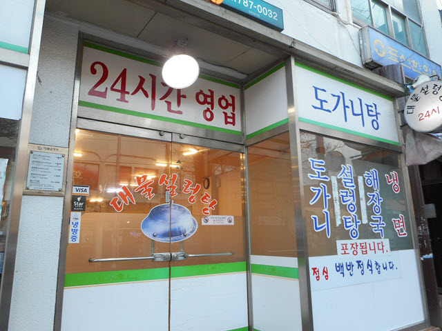
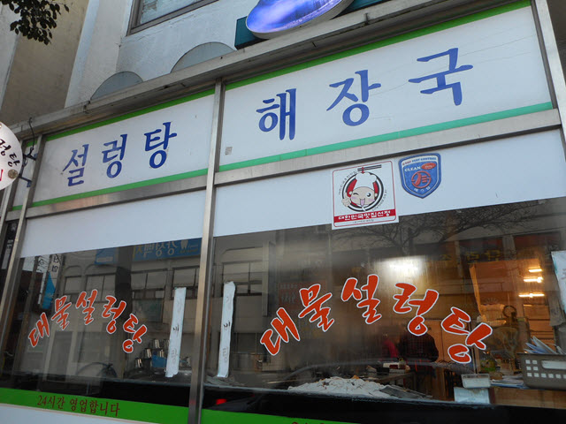
餐館的菜單, 有中文的, 點菜沒有困難。
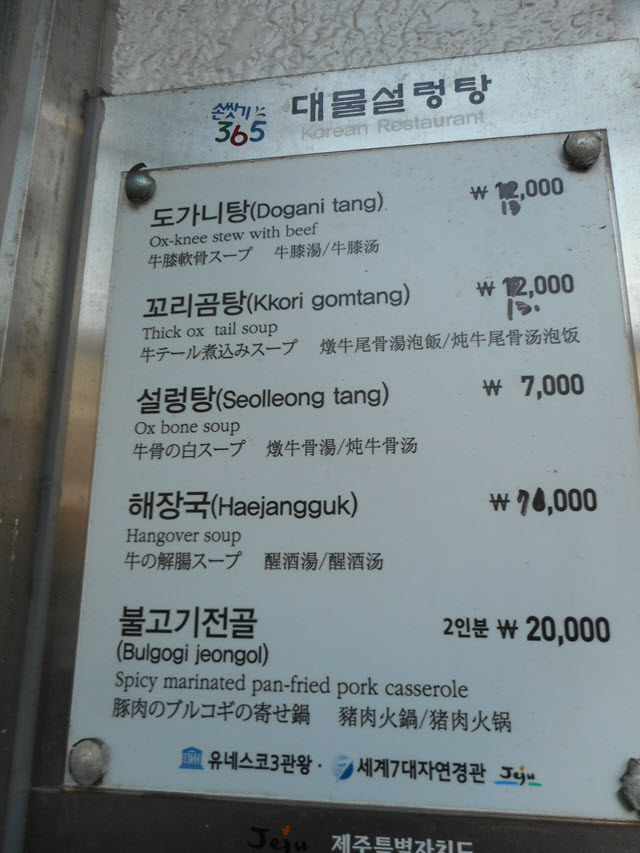
她叫了一客牛骨湯飯, 價錢是7,000韓元, 份量很少, 只有兩件牛骨。
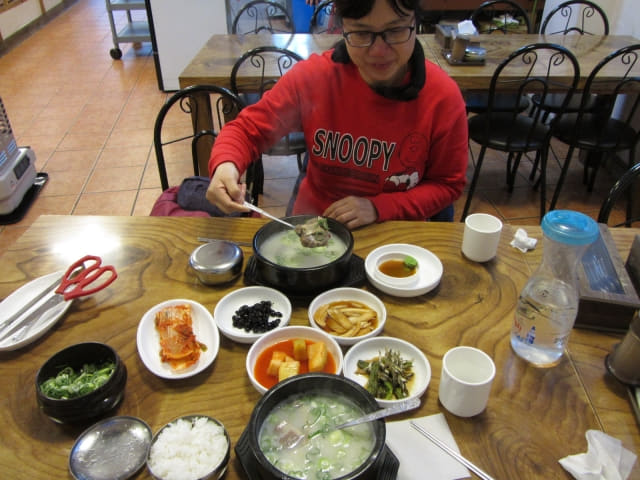
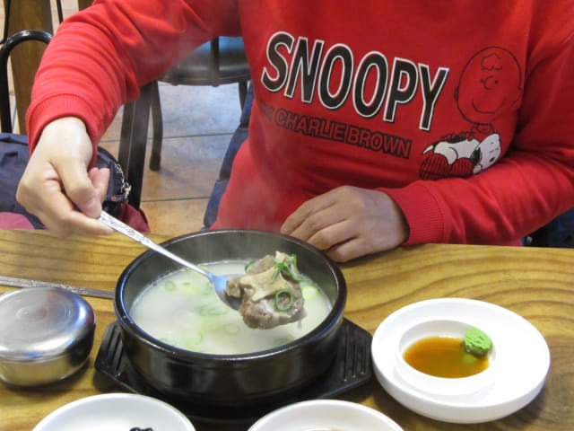
我叫了一客牛尾湯飯, 價錢是13,000韓元, 份量多一些
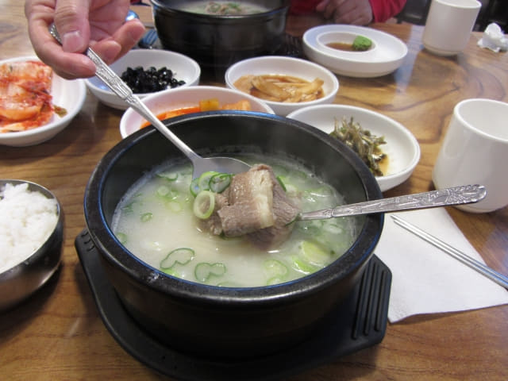
吃完晚餐, 沿昏暗馬路慢慢走往酒店, 經過一間 CU 便利店, 打算買兩個橘子, 竟然要5,000韓元, 太貴了! 當然不買; 繼續循馬路走, 經過一間蛋糕店, 看見有蛋糕卷, 十分吸引, 便想買兩件吃, 但店舖老闆表示只整卷賣的; 整卷蛋糕太大了, 今晚肯定沒法吃完, 又買不成! 店舖老闆看見我們那麼失望, 給了一些我們試吃, 很好味呀!
表善宿雷森觀光酒店 (Rezion Tourist Hotel)
步行一會便返回我們下榻的表善宿雷森觀光酒店。辦理了入住手續, 取回行李, 乘電梯往5F房間, 放下行李, 約晚上七時半。
房間十分寬敞、舒適和清潔, 也是值得推薦的一間酒店。窗外可看到我們今天散步的表善海灘, 環境很優美的。
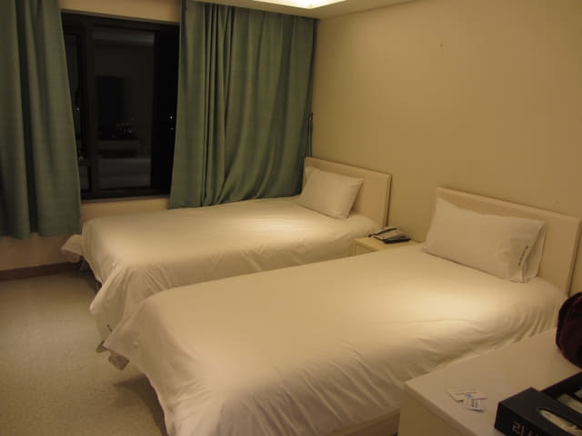
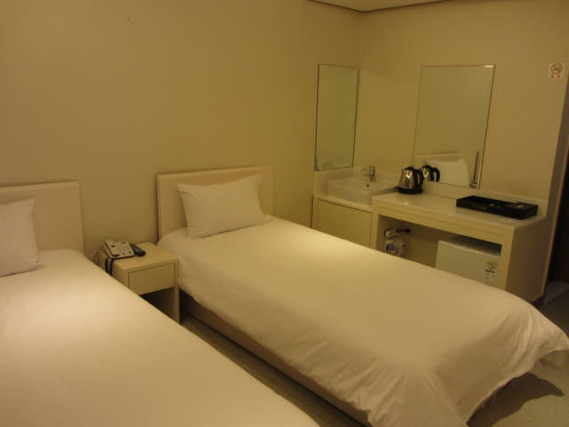
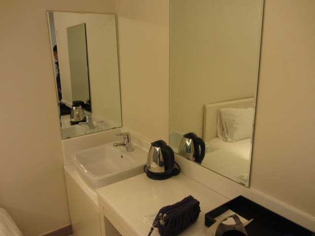
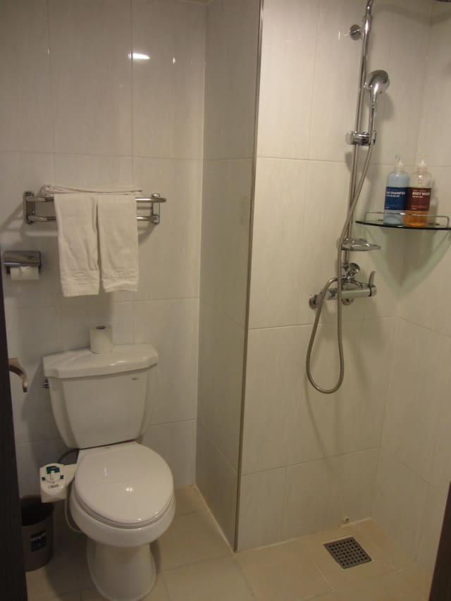
原本很悠閒的表善偶來小路散步, 想不到因走錯路而變得緊張驚險, 我想, 旅程就如人生一樣吧, 如果太平凡, 就沒有什麼難忘的回憶。